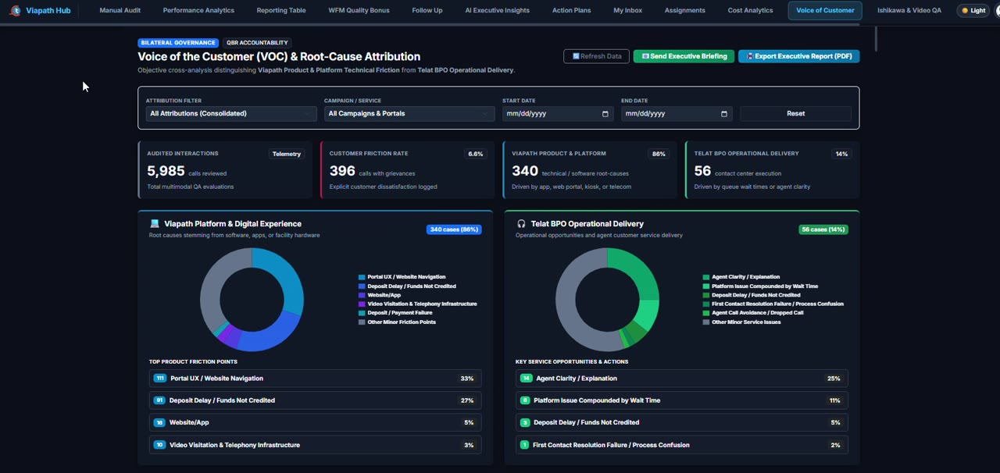
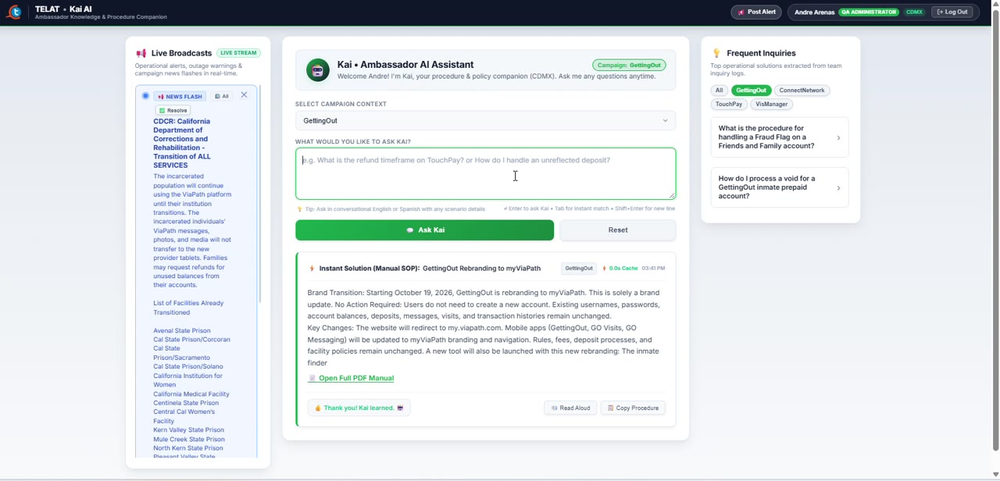
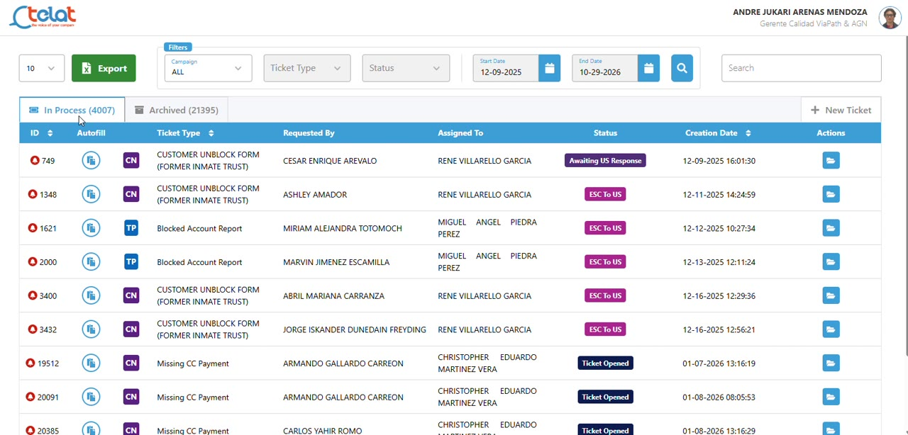
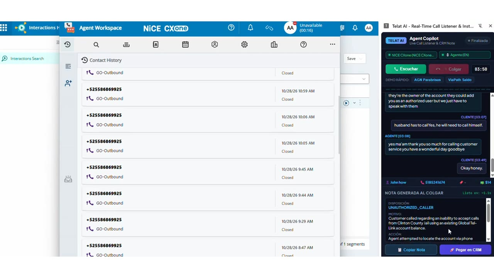

Llamadas más inteligentes.
Mayor calidad.
Menos trabajo manual.
Cuatro herramientas impulsadas por IA que ayudan a agentes, supervisores y equipos de calidad a lograr más en cada interacción.
Cada interacción evaluada,
no solo una muestra.
El Motor de QA transcribe, analiza y califica interacciones de voz y texto automáticamente, aplicando su propia rúbrica y estándares de calidad.
de interacciones evaluadas
criterios de rúbrica evaluados en cada llamada
detección de desviaciones críticas
De la grabación al diagnóstico en un solo lugar.

Transcribir y calificar
Cada llamada se analiza en audio, habilidades conversacionales y apego al procedimiento.
Monitorear desempeño
Tableros dinámicos con calificaciones, tasas de aprobación y principales brechas por sede y campaña.
Coaching con diagnósticos de IA
Resúmenes ejecutivos que señalan con exactitud dónde enfocar la capacitación del personal.
La respuesta correcta, en segundos,
mientras el cliente sigue en la línea.
Kai es un copiloto en tiempo real para especialistas. Localiza el procedimiento oficial al instante y transforma consultas complejas en pasos claros y directos.
para localizar procedimientos y manuales vigentes
para cambiar de campaña a mitad del turno
alertas de supervisión dirigidas a cada especialista
Búsqueda en tiempo real. Asistencia guiada ante casos complejos.

Selección de campaña
Los especialistas acceden a lo específico sin perder de vista las políticas generales.
Escribir o consultar
Resultados inmediatos al teclear o consulta guiada para soporte paso a paso.
Seguir el procedimiento
Diagnóstico, acciones numeradas y fraseología exacta sugerida al cliente.
Cada ticket en un sistema
vivo y unificado.
Note Generator sustituye hojas de cálculo dispersas por una plataforma única para crear, asignar y resolver tickets con visibilidad en tiempo real para todo el equipo.
sistema centralizado en lugar de hojas dispersas
alerta de vencimiento que resalta tickets demorados
visibilidad de cada ticket abierto
Crear, asignar, resolver.

Crear el ticket
Formularios prediseñados para cada tipología disponibles de inmediato en el panel.
Asignar responsable
Los supervisores eligen al colaborador idóneo para su atención oportuna.
Cerrar con justificación
Los estados de cierre exigen nota de resolución para blindar la trazabilidad de cada caso.
Transforme 90 segundos de trabajo
posterior a la llamada en un solo clic.
AutoSummary procesa la llamada en tiempo real y redacta una nota estructurada para el CRM en el instante en que el especialista cuelga.
tiempo de trabajo posterior a la llamada (wrap-up)
para estructurar y redactar la nota
capacidad operativa adicional
Atienda la llamada. Valide. Guarde.

Atienda la llamada normalmente
Cero alteraciones en el flujo operativo ni en la telefonía del especialista.
La nota aparece al colgar
Motivo, detalles, resolución y sentimiento listos en pantalla al instante.
Registro directo en el CRM
Un solo clic y la nota queda guardada en la ficha del cliente, con datos confidenciales enmascarados.
Llevemos esta tecnología
a su operación.
Mayor calidad, respuestas más rápidas y menos trabajo manual desde el primer día.